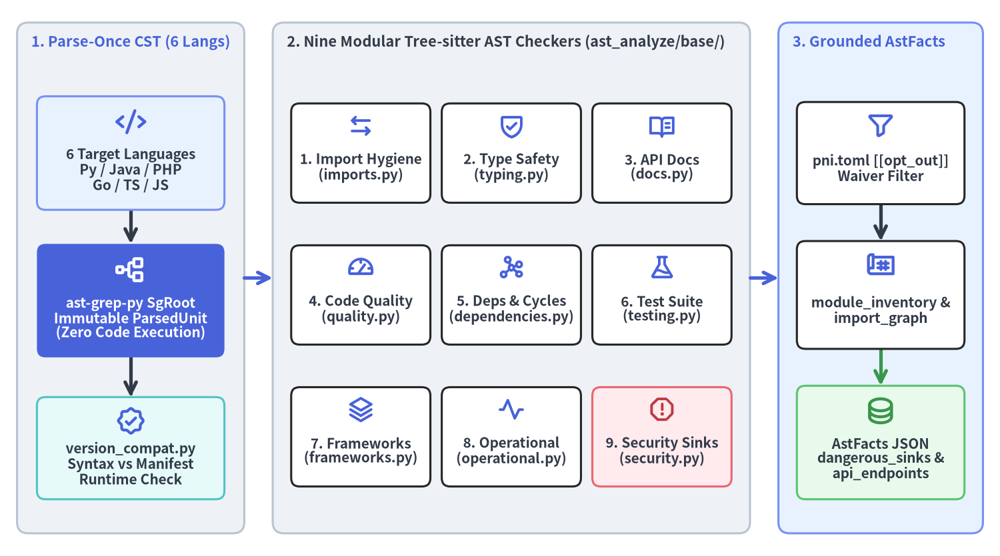
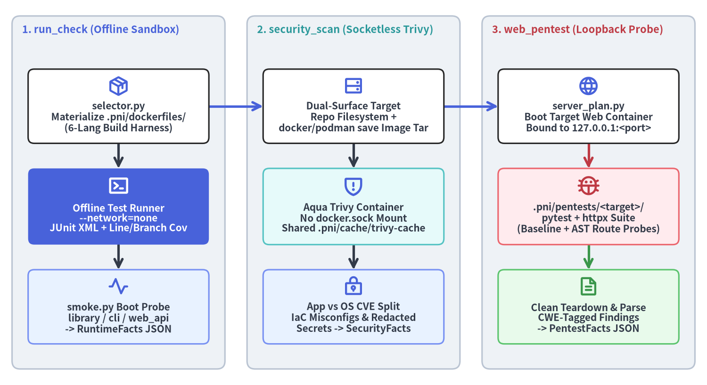

Deterministic Analyzers, Sandbox Runtime & Live Pentest
Every quantitative metric, dependency graph, test coverage percentage, CVE count, and live HTTP exploit check in pni501 is produced by 6 deterministic Python analyzers before any LLM reasoning step runs. By combining parse-once Tree-sitter CST analysis (ast-grep-py) across 6 languages with isolated Docker/Podman container sandboxes for offline unit testing, socketless Trivy scanning, and live loopback penetration testing, pni501 guarantees 100% reproducible, hallucination-free engineering evidence.

Source Code
from drawlib.canvas import save, setup
from drawlib.diagrams.architecture import ArchitectureDiagram, Node, NodeGroup, PhosphorIcon
from drawlib.styles import Styles
setup(width=176, height=98, dpi=150)
diag = ArchitectureDiagram(
node_style=Styles.PrimaryBold,
node_text_style=Styles.DarkBold.patch(text_size=10.0),
edge_style=Styles.DarkBold,
edge_text_style=Styles.DarkBold.patch(text_size=10.0),
node_card_style=Styles.WhiteBordered.patch(shape_r=1.5),
)
g_in = diag.add(
NodeGroup(
title="1. Parse-Once CST (6 Langs)",
width=40.0,
height=90.0,
style=Styles.Neutral.patch(shape_r=2.0),
text_style=Styles.PrimaryBold.patch(text_size=10.5, halign="left", valign="top"),
),
xy=(3.0, 4.0),
)
n_langs = g_in.add(
Node(
"6 Target Languages\nPy / Java / PHP\nGo / TS / JS",
width=33.0,
height=20.0,
icon=PhosphorIcon.CODE,
icon_size=5.4,
card_style=Styles.PrimaryNeutral.patch(shape_r=1.5),
),
xy=(20.0, 67.0),
)
n_cst = g_in.add(
Node(
"ast-grep-py SgRoot\nImmutable ParsedUnit\n(Zero Code Execution)",
width=33.0,
height=20.0,
icon=PhosphorIcon.TREE_STRUCTURE,
icon_size=5.6,
style=Styles.WhiteBold,
text_style=Styles.WhiteBold.patch(text_size=10.0),
card_style=Styles.PrimaryFlat.patch(shape_r=1.5),
),
xy=(20.0, 41.0),
)
n_ver = g_in.add(
Node(
"version_compat.py\nSyntax vs Manifest\nRuntime Check",
width=33.0,
height=18.0,
icon=PhosphorIcon.SEAL_CHECK,
icon_size=5.2,
card_style=Styles.SecondaryNeutral.patch(shape_r=1.5),
),
xy=(20.0, 15.0),
)
g_chk = diag.add(
NodeGroup(
title="2. Nine Modular Tree-sitter AST Checkers (ast_analyze/base/)",
width=84.0,
height=90.0,
style=Styles.Neutral.patch(shape_r=2.0),
text_style=Styles.DarkBold.patch(text_size=10.5, halign="left", valign="top"),
),
xy=(48.0, 4.0),
)
c1 = g_chk.add(Node("1. Import Hygiene\n(imports.py)", width=24.5, height=17.5, icon=PhosphorIcon.ARROWS_LEFT_RIGHT, icon_size=4.8), xy=(15.5, 67.0))
c2 = g_chk.add(Node("2. Type Safety\n(typing.py)", width=24.5, height=17.5, icon=PhosphorIcon.SHIELD_CHECK, icon_size=4.8), xy=(42.0, 67.0))
c3 = g_chk.add(Node("3. API Docs\n(docs.py)", width=24.5, height=17.5, icon=PhosphorIcon.BOOK_OPEN_TEXT, icon_size=4.8), xy=(68.5, 67.0))
c4 = g_chk.add(Node("4. Code Quality\n(quality.py)", width=24.5, height=17.5, icon=PhosphorIcon.GAUGE, icon_size=4.8), xy=(15.5, 42.0))
c5 = g_chk.add(Node("5. Deps & Cycles\n(dependencies.py)", width=24.5, height=17.5, icon=PhosphorIcon.GRAPH, icon_size=4.8), xy=(42.0, 42.0))
c6 = g_chk.add(Node("6. Test Suite\n(testing.py)", width=24.5, height=17.5, icon=PhosphorIcon.FLASK, icon_size=4.8), xy=(68.5, 42.0))
c7 = g_chk.add(Node("7. Frameworks\n(frameworks.py)", width=24.5, height=17.5, icon=PhosphorIcon.STACK, icon_size=4.8), xy=(15.5, 17.0))
c8 = g_chk.add(Node("8. Operational\n(operational.py)", width=24.5, height=17.5, icon=PhosphorIcon.PULSE, icon_size=4.8), xy=(42.0, 17.0))
c9 = g_chk.add(
Node(
"9. Security Sinks\n(security.py)",
width=24.5,
height=17.5,
icon=PhosphorIcon.WARNING_OCTAGON,
icon_size=4.8,
style=Styles.DangerBold,
card_style=Styles.DangerNeutral.patch(shape_r=1.5),
),
xy=(68.5, 17.0),
)
g_out = diag.add(
NodeGroup(
title="3. Grounded AstFacts",
width=36.0,
height=90.0,
style=Styles.PrimaryNeutral.patch(shape_r=2.0),
text_style=Styles.PrimaryBold.patch(text_size=10.5, halign="left", valign="top"),
),
xy=(137.0, 4.0),
)
n_opt = g_out.add(
Node(
"pni.toml [[opt_out]]\nWaiver Filter",
width=29.5,
height=18.0,
icon=PhosphorIcon.FUNNEL,
icon_size=5.0,
),
xy=(18.0, 67.0),
)
n_inv = g_out.add(
Node(
"module_inventory &\nimport_graph",
width=29.5,
height=19.0,
icon=PhosphorIcon.BLUEPRINT,
icon_size=5.2,
),
xy=(18.0, 42.0),
)
n_facts = g_out.add(
Node(
"AstFacts JSON\ndangerous_sinks &\napi_endpoints",
width=29.5,
height=20.0,
icon=PhosphorIcon.DATABASE,
icon_size=5.4,
style=Styles.SuccessBold,
card_style=Styles.SuccessNeutral.patch(shape_r=1.5),
),
xy=(18.0, 16.0),
)
diag.connect(n_langs, n_cst, routing="orthogonal")
diag.connect(n_cst, n_ver, routing="orthogonal")
diag.connect(g_in, g_chk, routing="orthogonal", style=Styles.PrimaryBold)
diag.connect(g_chk, g_out, routing="orthogonal", style=Styles.PrimaryBold)
diag.connect(n_opt, n_inv, routing="orthogonal")
diag.connect(n_inv, n_facts, routing="orthogonal", style=Styles.SuccessBold)
diag.draw(xy=(0.0, 0.0))
save()
1. Static Repository & Tree-sitter AST Analyzers
1.1 Repository, Supply-Chain & Governance Inspector (project_inspect -> ProjectFacts)
Implemented in src/pni/_actions/project_inspect.py and src/pni/_actions/_repo_governance.py, run_project_inspect() extracts language-agnostic structural, dependency, documentation, and OpenSSF supply-chain signals without invoking external package managers:
- 6-Language Manifests & Lockfiles: Parses
pyproject.toml/setup.py/requirements.txt(Python),pom.xml/build.gradle*/ Gradle version catalogs (Java),composer.json/ WordPress headers (PHP),go.mod/go.sum(Go), andpackage.json/tsconfig.json(TypeScript & JavaScript). Detectslockfiles_found(uv.lock,poetry.lock,gradle.lockfile,composer.lock,go.sum,package-lock.json,pnpm-lock.yaml,yarn.lock),unpinned_dependencies,detected_frameworks,runtime_types(["library"],["cli"],["cli", "library"],["web_api"],["worker"]),legacy_language_findings, andtooling_modernization_issues. - OpenSSF Supply-Chain & Repo Governance (
_repo_governance.py): Auditshas_license,has_security_policy(SECURITY.md),has_dependency_automation(Dependabot / Renovate), GitHub Actionsci_supply_chain_issues(mutable@main/@masteraction refs, missingpermissions:blocks, fat inline bash scripts),committed_secret_files(.env,.pem,.key, service-account JSONs), Diátaxisreadme_headings/docs_inventory, and staticcontainer_hygiene_issues(:latestbase tags, rootUSER).
1.2 Parse-Once Multi-Language CST/AST Analyzer (ast_analyze -> AstFacts)
Implemented in src/pni/_actions/ast_analyze/, run_ast_analyze() parses each target file once via ast-grep-py into an immutable ParsedUnit (SgRoot Tree-sitter CST) without importing or executing untrusted code, then runs 9 modular checkers across python/, java/, php/, go/, and ts_js/ (TypeScript + JavaScript):
| # | Checker Module | Key AstFacts Outputs & Signals Extracted |
|---|---|---|
| 1 | Import Hygiene (imports.py) |
import_hygiene_coverage_pct, unsorted_imports, wildcard_imports, and function-scoped late_imports |
| 2 | Type Safety (typing.py) |
type_safety_coverage_pct, missing parameter/return/field annotations (type_safety_issues), Any/raw-generic/mixed/interface{} usages (weak_type_usages), and unscoped_type_ignores (# type: ignore, @SuppressWarnings, @ts-ignore) |
| 3 | API Documentation (docs.py) |
docstring_coverage_pct, missing_docstrings, empty_docstrings, and parameter/return doc_signature_mismatches across PEP 257, Javadoc, PHPDoc, GoDoc, and JSDoc/TSDoc |
| 4 | Code Quality & Inventory (quality.py) |
Exact total_files, total_loc, total_classes, total_functions, per-file module_inventory (public_types, public_callables), complex_functions (> 50 lines, > 7 branches, or cognitive complexity > 15), excessive_parameters (> 6), global_state_usages, and bug_risk_idioms |
| 5 | Dependencies & Boundaries (dependencies.py) |
internal_import_graph, Tarjan SCC circular_dependencies, static-only type_checking_cycles, unused_dependencies, undeclared_dependencies, and architectural boundary_violations |
| 6 | Test Suite Health (testing.py) |
test_functions_count, module_test_coverage_pct, assertion_free_tests, and fixture/harness notes (conftest.py, JUnit 5, PHPUnit, testing.T, Vitest/Jest) |
| 7 | Frameworks & Idioms (frameworks.py) |
Framework-specific anti-patterns (framework_issues) and modernization_hints across FastAPI/Flask/Django, Spring Boot, Laravel/WordPress, Gin/Echo/net/http, and Express/NestJS/Next.js |
| 8 | Operational & 12-Factor (operational.py) |
missing_io_timeouts (HTTP/DB/RPC calls without timeouts), scattered_env_access (os.getenv / System.getenv / process.env outside config modules), unstructured_logging, and AST-level hardcoded_secrets |
| 9 | Security Sinks & Routes (security.py) |
CWE-classified dangerous_sinks (sql_injection, xss, command_injection, unsafe_deserialization, code_execution, path_traversal) and extracted HTTP routes (api_endpoints with http_method, path, handler, and auth_mechanisms) |
1.3 Language Version Compatibility & pni.toml Waiver Filtering
Alongside the 9 AST checkers, run_ast_analyze() executes two cross-cutting deterministic passes:
- Manifest vs. Syntax Compatibility (
version_compat.py): Cross-checks parsed CST constructs against the minimum runtime version declared in the project manifest (requires-python, Maven/Gradle Java target,composer.jsonPHP constraint, orgo.modgodirective)—flagginglanguage_version_mismatchessuch as Python 3.10+match/caseor 3.12+typestatements under lower bounds, Java 16+recorddeclarations or Java 11+String.isBlank()/java.net.httpon Java 8 targets, PHP 8.0+match/?->or 8.1+enum/readonlyon PHP 7.x constraints, and Go 1.18+ generics or Go 1.21+/1.23+ stdlib packages (log/slog,slices,iter) on oldergodirectives. - Audited
[[opt_out]]Waivers (pni.toml): FiltersCodeLocationandSecuritySinkLocationitems against explicit[[opt_out]]rules inpni.tomlwhile recording exact suppression counts (opt_out_match_counts) so waived findings remain transparent during audits.
2. Isolated Container Sandbox: Runtime, Trivy & Live Pentest
To verify dynamic behavior without polluting the host machine or exposing external networks, pni501 executes run_check, security_scan, and web_pentest inside isolated Docker or Podman containers (engine_detect.py auto-detects rootless Podman or Docker):

Source Code
from drawlib.canvas import save, setup
from drawlib.diagrams.architecture import ArchitectureDiagram, Node, NodeGroup, PhosphorIcon
from drawlib.styles import Styles
setup(width=176, height=96, dpi=150)
diag = ArchitectureDiagram(
node_style=Styles.PrimaryBold,
node_text_style=Styles.DarkBold.patch(text_size=10.0),
edge_style=Styles.DarkBold,
edge_text_style=Styles.DarkBold.patch(text_size=10.0),
node_card_style=Styles.WhiteBordered.patch(shape_r=1.5),
)
g1 = diag.add(
NodeGroup(
title="1. run_check (Offline Sandbox)",
width=53.0,
height=88.0,
style=Styles.Neutral.patch(shape_r=2.0),
text_style=Styles.PrimaryBold.patch(text_size=10.5, halign="left", valign="top"),
),
xy=(3.0, 4.0),
)
r1 = g1.add(
Node(
"selector.py\nMaterialize .pni/dockerfiles/\n(6-Lang Build Harness)",
width=45.0,
height=18.5,
icon=PhosphorIcon.PACKAGE,
icon_size=5.2,
),
xy=(26.5, 65.5),
)
r2 = g1.add(
Node(
"Offline Test Runner\n--network=none\nJUnit XML + Line/Branch Cov",
width=45.0,
height=19.0,
icon=PhosphorIcon.TERMINAL_WINDOW,
icon_size=5.4,
style=Styles.WhiteBold,
text_style=Styles.WhiteBold.patch(text_size=10.0),
card_style=Styles.PrimaryFlat.patch(shape_r=1.5),
),
xy=(26.5, 40.5),
)
r3 = g1.add(
Node(
"smoke.py Boot Probe\nlibrary / cli / web_api\n-> RuntimeFacts JSON",
width=45.0,
height=18.5,
icon=PhosphorIcon.PULSE,
icon_size=5.2,
card_style=Styles.PrimaryNeutral.patch(shape_r=1.5),
),
xy=(26.5, 15.5),
)
g2 = diag.add(
NodeGroup(
title="2. security_scan (Socketless Trivy)",
width=53.0,
height=88.0,
style=Styles.Neutral.patch(shape_r=2.0),
text_style=Styles.SecondaryBold.patch(text_size=10.5, halign="left", valign="top"),
),
xy=(61.5, 4.0),
)
s1 = g2.add(
Node(
"Dual-Surface Target\nRepo Filesystem +\ndocker/podman save Image Tar",
width=45.0,
height=18.5,
icon=PhosphorIcon.HARD_DRIVES,
icon_size=5.2,
),
xy=(26.5, 65.5),
)
s2 = g2.add(
Node(
"Aqua Trivy Container\nNo docker.sock Mount\nShared .pni/cache/trivy-cache",
width=45.0,
height=19.0,
icon=PhosphorIcon.SHIELD_WARNING,
icon_size=5.4,
card_style=Styles.SecondaryNeutral.patch(shape_r=1.5),
),
xy=(26.5, 40.5),
)
s3 = g2.add(
Node(
"App vs OS CVE Split\nIaC Misconfigs & Redacted\nSecrets -> SecurityFacts",
width=45.0,
height=18.5,
icon=PhosphorIcon.LOCK_KEY,
icon_size=5.2,
card_style=Styles.PrimaryNeutral.patch(shape_r=1.5),
),
xy=(26.5, 15.5),
)
g3 = diag.add(
NodeGroup(
title="3. web_pentest (Loopback Probe)",
width=53.0,
height=88.0,
style=Styles.Neutral.patch(shape_r=2.0),
text_style=Styles.DangerBold.patch(text_size=10.5, halign="left", valign="top"),
),
xy=(120.0, 4.0),
)
p1 = g3.add(
Node(
"server_plan.py\nBoot Target Web Container\nBound to 127.0.0.1:<port>",
width=45.0,
height=18.5,
icon=PhosphorIcon.GLOBE,
icon_size=5.2,
),
xy=(26.5, 65.5),
)
p2 = g3.add(
Node(
".pni/pentests/<target>/\npytest + httpx Suite\n(Baseline + AST Route Probes)",
width=45.0,
height=19.0,
icon=PhosphorIcon.BUG,
icon_size=5.4,
style=Styles.DangerBold,
card_style=Styles.DangerNeutral.patch(shape_r=1.5),
),
xy=(26.5, 40.5),
)
p3 = g3.add(
Node(
"Clean Teardown & Parse\nCWE-Tagged Findings\n-> PentestFacts JSON",
width=45.0,
height=18.5,
icon=PhosphorIcon.FILE_TEXT,
icon_size=5.2,
style=Styles.SuccessBold,
card_style=Styles.SuccessNeutral.patch(shape_r=1.5),
),
xy=(26.5, 15.5),
)
diag.connect(r1, r2, routing="orthogonal")
diag.connect(r2, r3, routing="orthogonal")
diag.connect(r1, s1, routing="orthogonal", style=Styles.PrimaryBold)
diag.connect(s1, s2, routing="orthogonal")
diag.connect(s2, s3, routing="orthogonal")
diag.connect(s1, p1, routing="orthogonal", style=Styles.PrimaryBold)
diag.connect(p1, p2, routing="orthogonal", style=Styles.DangerBold)
diag.connect(p2, p3, routing="orthogonal", style=Styles.SuccessBold)
diag.draw(xy=(0.0, 0.0))
save()
2.1 Isolated Container Runtime Verification (run_check -> RuntimeFacts)
Implemented in src/pni/_actions/runtime_check/, run_runtime_check() verifies dynamic buildability, test execution, coverage, and boot health inside an isolated container (persisting .pni/cache/<workflow_id>/runtime/runtime_facts.json):
- Harness Materialization & Image Build (
selector.py): Selects the matching.pni/dockerfiles/template (uv,poetry,pip,maven,gradle,composer,go,npm,pnpm,yarn, orraw), validates any projectDockerfile, and builds the test harness image. - Offline Unit Tests & Measured Coverage (
--network=none): Executes the test suite with--network=noneso accidental external network calls fail deterministically, parses JUnit XML (TestExecutionResult+FailedTestCaseexcerpts), and extracts line/branch coverage (CoverageResult+lowest_covered_modules) frompytest-covJSON, JaCoCo XML, Clover XML,go test -coverprofile, or Vitest/Jest LCOV/JSON reports. - Archetype-Aware Smoke Probe (
smoke.py): Runs a container startup probe tailored toruntime_types—library(clean module import),cli(--helpexit0),cli+library(combined--help+ SDK import), orweb_api(boot + loopback HTTP probe)—classifying failures intoBootFailureKind.
2.2 Socketless Containerized Vulnerability & Secret Scan (security_scan -> SecurityFacts)
Implemented in src/pni/_actions/security_scan/, run_security_scan() executes Aqua Trivy (ghcr.io/aquasecurity/trivy) inside a socketless container mounting a shared vulnerability DB cache at .pni/cache/trivy-cache/ (persisting .pni/cache/<workflow_id>/security/security_facts.json):
- Dual-Surface Scanning Without
docker.sock: Scans both the repository filesystem (scan_filesystem) and an exporteddocker save/podman savetarball of the resolved container image (scan_resolved_image)—never mounting the host/var/run/docker.socksocket. - App vs. OS CVE Separation, Dev-Scope Filtering & Redacted Secrets: Splits deduplicated CVEs into
app_vuln_counts(language lockfiles/manifests, annotatingis_unpinned_specifierrange matches and separating production vs. dev-only scopes viadep_scopes.py) andos_vuln_counts(base image OS packages), alongside IaC/Dockerfilemisconfigurationsand redactedSecretFindingItemleaks.
2.3 Live Loopback Web Penetration Testing (web_pentest -> PentestFacts)
Implemented in src/pni/_actions/pentest/, run_web_pentest() performs dynamic black-box HTTP security probing against web applications (persisting .pni/cache/<workflow_id>/pentest/pentest_facts.json):
- Fail-Closed Explicit Probe Suite (
.pni/pentests/<target>/): Workflows containingweb_pentestfail closed atpni workflows startunless.pni/pentests/<target>/containsconftest.pyandtest_*.py. Runningpni pentests init -w <workflow_id>generates baseline HTTP security header, CORS, and method checks alongsidetest_target_surface.pyroute probes synthesized directly fromAstFacts.api_endpoints. - Loopback Container Execution (
127.0.0.1):server_plan.pyboots the target web server inside a container bound strictly to host loopback (127.0.0.1:<port>), runspytest + httpxagainst the live endpoint (or an explicit--base-url), tears down the container cleanly, and parses JUnit XML failures into CWE-taggedPentestFindingItemrecords.
# Scaffold .pni/pentests/<target>/ from AST-discovered routes and run against loopback container
pni pentests init -w <workflow_id>
pni pentests run -w <workflow_id>
3. Graph- & Contract-Driven Migration Analyzer (migration_analyze -> MigrationFacts)
Implemented in src/pni/_actions/migration_analyze/, run_migration_analyze() powers category: migration workflows anchored to a completed based_on audit run (persisting .pni/cache/<workflow_id>/migration_facts.json):
- Tarjan SCC Cycle Cuts & Topological Waves
1..4(graph_waves.py): Detects strongly connected components ininternal_import_graph, recommends minimalcycle_cuts(CycleCutSuggestion), and partitions modules from leaf DTOs/utilities (Wave 1) through domain/services (Waves 2..3) to entrypoints (Wave 4). - Implicit Contracts, Boundary Touchpoints &
DEC-XXCandidates: Reconstructs untyped request/response keys (implicit_contractsincontracts.py) andenv_contracts, locatesin_memory_state,persistence_db, andexternal_http_rpccouplings (boundary_touchpointsintouchpoints.py), matches automated codemods (ruff,openrewrite,rector,gofmt,jscodeshiftincodemods.py), and flags ambiguous legacy behaviors asDEC-XXspec_vs_bug_candidates(ambiguities.py).
Next, see how these deterministic facts feed into the 7-Axis Scoring Model and the Drawlib Visual Reporter, or review per-language support details in Supported 6 Languages.